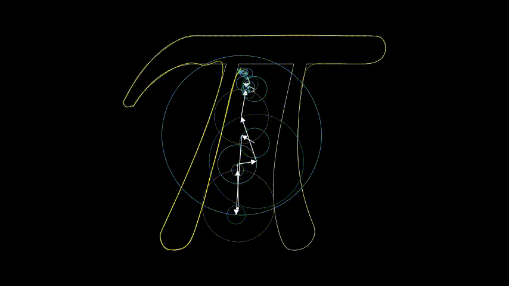
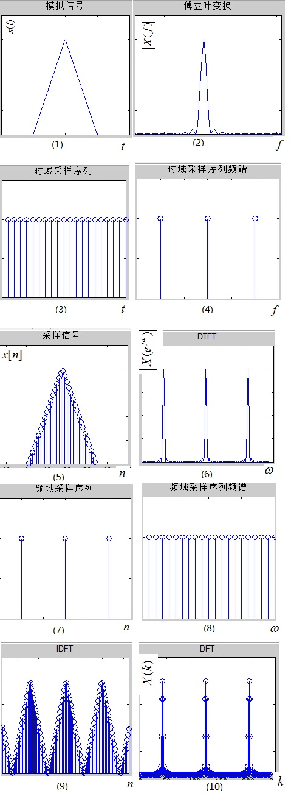
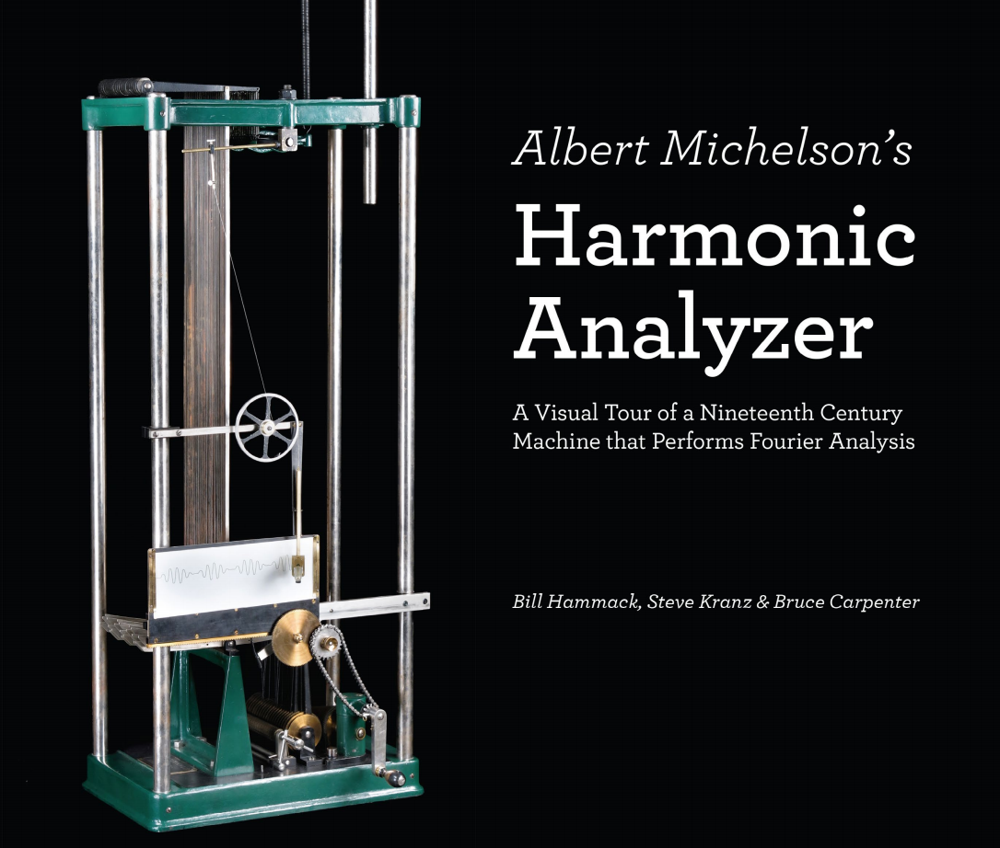

#TODO:重新架构并完善内容;修改细节;尽可能做出视频.
Fourier是一个大神,这一节的篇幅估计会很长很长……主要是把我所看到的好的视频或者文章结合我自己的理解做一个融汇(网上关于这方面的好资料很多也很棒!).主要参考[12]-[22],还有一些杂乱的内容没有尽数列出.
Fourier Animation
这一节直观展示几个傅里叶动画,源码来自3b1b,我稍作修改.更多类似的动画可以看[13].
Ranges

$\pi$

傅里叶级数
傅里叶级数是级数的一种.傅里叶最早提出傅里叶级数的时候是不受主流数学家待见的,后来这一成果系统地发表在他的著作《热的解析定律》中.老爷子的大半生都在学术界和政治界辗转,可谓左右不逢源.他在自己21岁生日的隔天写道:”昨天是我二十一岁生日,牛顿和帕斯卡已经成就斐然的年纪.”他熬到法兰斯科学院院士,以前学术界的老头子都差不多走光了的时候,赶紧著书立说,名山事业.这告诉我们一个道理——出门要趁早.如果老头子当初仕途春风得意,我猜今天的傅里叶变换还是叫傅里叶变换,《热的解析定律》会更早出版吧.
傅里叶提出傅里叶级数是为了研究热学的,只是后来这一工具在信号处理方面身手矫健,出奇地好用!可能他老人家都没有想到吧.晚年的他对热学近乎走火入魔,认为热是世界上最好的东西,甚至能包治百病,把自己的房间搞得更烤炉一样,最后死于CO中毒引起的心力衰竭.
傅里叶猜测任意周期函数都可以写成三角函数之和.当然了,这不是他最早想出来的,拉格朗日等数学家早先就有类似的发现(都是大佬).傅里叶级数的计算方法在高等数学中已经学过了,我就不赘述了,这里主要探讨如何理解傅里叶级数.哦对!傅里叶级数的收敛条件什么的我也略去了.
级数是”向量”
私以为,级数都可以理解为向量.
傅里叶级数形如:
$$
f(x)=C+\sum_{n=1}^{\infty}\left(a_{n} \cos \left(\frac{2 \pi n}{T} x\right)+b_{n} \sin \left(\frac{2 \pi n}{T} x\right)\right), C \in \mathbb{R}
\tag{4.1}
$$
以$\vec{e}_1=(0,1)$和$\vec{e}_2(1,0)$向量为基底,任何二维向量都可以由基底来表示.例如$(2,7)=7\vec{e}_1 + 2\vec{e}_2$.
同理,如果我们视
$$
1/\sqrt{2},\cos x,\sin x,\cos 2x,\sin 2x,\cos 3x,\sin 3x,\cdots \tag{4.2}
$$
为基底,那么函数用傅里叶级数表示就相当于在数学空间中的一个向量.例如:
$$
f(x)=2+\cos 3x+4\sin2x \tag{4.3}
$$
可以写成$(2/\sqrt{2},0,0,0,4,1)$.事实上式$(4.2)$就是正交基,由此组成的数学空间为希尔伯特空间,其内积的定义不同于一般的内积运算,所以导致常数项为$1/\sqrt{2}$而不是$1$(是不是$1/\sqrt{2}$我不确定,忘记了,也没带书,反正不是$1$).总之,知道这么个意思就行了.正交性在高数课本中也有证明的.
所以,级数都可以理解为特定数学空间的向量表示(马同学的数学理解为线性组合,本质上是一样的).有兴趣的可以拿麦克劳林级数来类比,但是不同函数的展开后的数学空间是不一样的,内积的定义也会发生变化.
所以傅里叶级数理解起来其实很简单,就是函数的一种”向量(线性组合)”表示,其他级数也是如此!
指数形式
信号处理中,跟常见的傅里叶级数是指数形式:
$$
f(x)=\sum_{n=-\infty}^{\infty} F_n e^{jn\Omega}\
\Omega=\frac{2\pi}{T}\tag{4.4}
$$
从三角函数过渡到虚指数很好理解,就是用欧拉公式:
$$
e^{i \theta}=\cos \theta+i \sin \theta, \quad(\theta \in \mathbb{R}). \tag{4.5}
$$
虚指数信号的表示可以直接用公式算,也可以先算三级函数的表示,然后用欧拉公式转换.怎么算看书吧,我就不赘述了.后面会详细地说一说虚数这个玩意儿!
动画演示
余弦半波函数逼近
动画解释
在解释之前先来说一说虚数这个玩意儿!虚数这个东西其实不虚.在上信号与系统课的时候,我的老师就说虚数是这是存在的,不要避免虚数.其实这样说很奇怪,虚数本来就是真实存在的,他和正数、负数、分数一样都是数的一种,但我们潜意识里面就好像认为虚数是不存在的一样.高斯就diss过”Imaginary(虚数)”这个名字!关于虚数的历史和由来可以看一下[22]的P1-4.
复数与欧拉公式
在写本小节之前,我花了两个小时把参考[22]看完了,也更新了世界观.
这个系列其实在大一就收藏了,就是一直没有看而已,我收藏夹里面有很多东西都是这样的.但我到是庆幸当初没有看,因为那个时候还没有学复变函数,看了也看不懂.虽然说网上有很多的优质资源,但我是一个急于汲取知识却没有耐心的人.希望有兴趣的好好地看一下[22]!!!
还有一点就是,优质的资源只有在对的时候看才事有效的.像如果没有前面高等数学、复变函数还有学的一些杂七杂八的内容,我是装不下[22]的内容的——前面的东西塑造的是容器.学很多科目的时候都会觉得这些有什么用?有什么用?有什么用?或许这就是无用之用吧.
对于复数的解释,我认为最好的办法就是结合欧拉公式式$(4.5)$.对于$e$和欧拉公式怎么来的,可能大家都不是很明确,可以看一下参考[21]、[19]、[20]、[24]、[15] (通过关联速度和位置来直观的展现欧拉公式,[20]中也有提到),再加上面的[22].比较神奇的是欧拉公式是可以用泰勒展开得到的,要知道欧拉公式的提出是早于泰勒展开的(神奇吧!).把我说罗列的内容看完并理解透彻,大概需要一天吧!
好了,本小节写到这里就差不多了.
如果你和我一样是一个懒人,没哟耐心看那些文章是视频的话,就康康我写的精华杂烩浓缩版本吧.下文我统一都说成复数,不再说虚数了.
学过复变函数都知道任何复数$z=a+bi$都可以通过欧拉公式写成$|z|e^{i\theta}$的形式.以$z=\sqrt{2}/2+i\sqrt{2}/2$为例,在复平面上如图:
#TODO
写成指数形式为$e^{\frac{\pi}{4}i}$ ,相当于什么呢——把$e^{0i}=1$绕原点旋转$\frac{\pi}{4}$,这就和指数形式的复数相乘的时候幅角相加对应起来了;特殊一点的就是$i$,把一个实数乘以$i$相当于在复平面上将其绕原点旋转$\pi/2$;乘以$i\cdot i=-1$就变成了相反数,也即绕原点旋转$\pi$.
#TODO
Explanation
下面我们开始进入正题.
有一天晚上在想怎么解释这个东西,被我想出来了.后来看了[12],他的解释方式其实和我的想法本质上一样的,我也不知道哪一种更理解(当然啦,我个人是偏向于我自己的方式),各位自取所需吧.
不是讲傅里叶级数吗?搞一个这样的动画究竟什么意思呢?傅里叶级在哪里啊?
傅里叶级数就是那些箭头!
我们先来画一个正弦函数$f(t)=\sin(t)$,这还不简单吗?信手拈来——
#TODO
如果不用代点求值的方法呢?对于谐波我们换一种表示方式,对于一般情况$a\sin(\omega t+\varphi)$,我们在笛卡尔坐标系中这样表示:
- 由$a$确定初始向量.
#TODO
- 由$\varphi$确定相位.
#TODO
- $\omega$如何表示呢?$\omega$在信号处理里面一般成为角频率,就是因为$\omega$定义了我们上面这个”箭头(向量)”的旋转速度.我们让”箭头”以$\omega$的角速度旋转起来.
#TODO
$f(t)=\sin(t)$的表示就是这样:
#TODO
那这和函数图像有何关系?我们让”箭头”边转边前进康康?
#TODO
还是和$f(t)=\sin( t)$的函数图像没有关系啊!那是因为你看的角度不太对,这样呢?
#TODO
神奇吧?$f(t)=\sin(t)$函数就是一个投影.那你可能会疑惑了——这个三维图形在另一个平面上的投影是什么?
#TODO
很直观,就是$\cos(t)$的函数图像,有什么另外的含义吗?其实没有,三维图像在$x-u$平面上的投影只是$x-y$平面上的投影偏移$\pi/2$而已.这是和我们的对于”箭头”怎么得来的定义是有有关的,如果你把左手坐标系换成右手坐标系,那形式上就会发生改变,但结果不会有变化(如果不太理解就默认我的定义方式就可以了,有兴趣的话可以自己探索一下,不难想明白.)
另一种表示方式是这样的——
#TODO
[12]中的表示方式是这样的——
#TODO
上面展示的都是同一个东西,只是从三个不同的角度罢了.
上面只说了$\sin(t)$,那$\cos(t)$谐波呢——就是$\sin(t+\pi/2)$嘛,所以我们一般统称$\sin(t)$和$\cos(t)$为正弦函数,而不是统称为余弦函数(哈哈,我自己这么认为的).
One More Example
绘制$f(t)=2+\cos t+2\sin (t+3\pi/4)+2\cos(2t+\pi/4)+4\sin2t+\cos 3t$的图像:
#TODO 箭头形式
#TODO 多个函数拟合
所以,我们可以看到,箭头形式和函数的叠加是殊途同归的!这样应该可以理解本节最开始的动画了吧!
$e^{it}$的图像
最后做一个补充.上面我们是用三角形式的傅里叶级数来解释的,那能不能用指数形式的傅里叶级数来解释呢?可以!但是没必要.不过我还是简单地写一下吧.
我们先来看$f(t)=e^{it}$的函数图像,这是一个复变函数,还是一个多值函数,读者可以先自行想一想怎么画出这个函数图像.
上欧拉公式!$f(t)=e^{it}=\cos(t)+i\sin(t )$,这样就应该很容易知道怎么画了吧——
#TODO
从物理角度来看,这就是一个运动的合成.函数图像在$\mathrm{Re}-t$平面上的投影就是$\cos(t)$,在$\mathrm{Re}-t$的投影就是$\sin(t)$,这里不要跟上面”箭头”形式的两个投影弄混了,这是两码事.
再举个栗子:
$$
f(t)=1+4\cos 2t+2\cos(7t+\pi/4),
$$
这个信号本身就是三角形式的傅里叶级数形式了,改写成指数形式的傅里叶级数
$$
f(t)=e^{-i(7t+\pi/4)}+2e^{-2it}+1+2e^{2it}+e^{i(7t+\pi/4)}.
$$
#TODO
因为$f(t)$是一个实信号,所以众多虚指数函数合起来的时候虚部抵消为$0$,就变成了二维的实平面上的图像.
根据[22],做一点延拓——
我们再来看一下$e^{it}$的图像:
#TODO
这是一个多值函数,我们之所以能够把这个函数图像绘制出来是因为变量$t$是一个实数,也就是只有一个维度,整个图像是三个维度.如果是$w=e^{iz},z=x+yi,w=u+vi$,那图像就变成了四维($x,y,u,v$各一个维度),我们是画不出来的.这需要用到黎曼几何,个人能力有限就不分析了.但对于$e^{it}$这个还是可以分析一下的,这个函数有无穷多个分支,在图上就是一小段一小段的曲线.对于$w=e^{iz}$,我们没有办法展现四维的图形,但可以看一下它的投影,每一个分支是一个小曲面,整个曲面就是黎曼曲面.
#TODO
傅里叶变换
接下来就是重头戏了——傅里叶变换!!!
傅里叶级数是针对周期函数的,如果是非周期函数呢?简单一点的非周期函数我们可以做周期延拓,但对于更一般的函数,就比较困难了,这个时候就需要傅里叶变换了.
频谱
三角形式
在讲傅里叶变换之前,先来说说频谱.
频谱其实很简单,就是傅里叶级数/傅里叶变换的一种表示.在上一小节中,我们把函数$f(x)=2+\cos 3x+4\sin2x$表示为向量的形式$(2/\sqrt{2},0,0,0,4,1)$.频谱就是换个花样给你看看这个函数究竟是个什么名堂,更直观罢了.一般频谱分为幅度谱和相位谱;当相位都是$\pi $的整数倍的时候可以合二为一.先看幅度谱,我们把横坐标换做基底,纵坐标换做系数(一般为绝对值).
$$
f(t)=2+\cos t+2\sin (t+3\pi/4)+2\cos(2t+\pi/4)+4\sin2t+\cos 3t
\tag{4.6}
$$
式$(4.4)$的幅度谱为:
#TODO
简化一下,我们称$\cos(\frac{2\pi}{T}n)$和$\sin(\frac{2\pi}{T}n)$中的$\frac{2\pi}{T}=\Omega$为频率,我们直接将$\Omega$作为横坐标,所以频谱的横坐标就是频率.
相位谱的横坐标还是基底,纵坐标编程相位,式$(4.4)$的相位谱为:
#TODO
指数形式
幅度谱,其实就是把系数(0频率的系数除外,沿用电学名词,称之为直流分量)对半了,分到两个对称的频率上.
#TODO
从傅里叶级数到傅里叶变换
本节不用太纠结计算部分,我们重点关注可视化部分.
对于周期函数$f_T(t)$:
#TODO
周期为$T$,基波角频率为$\Omega=\frac{2\pi}{T}$,在一个周期$(-T/2,T/2)$内的表达式为:
$$
f_T(t)=\left\{\begin{array}{ll}
{E} ,& { |t|<\frac{\tau}{2}} \\\
{0} ,& {\frac{\tau}{2}<|t|<\frac{T}{2}}
\end{array}\right. \tag{4.7}
$$
三角形式傅里叶级数(照抄课本)为:
$$
\begin{aligned}
a_{0}=&\frac{1}{T} \int_{-\frac{T}{2}}^{\frac{T}{2}} f(t) \mathrm{d} t=\frac{1}{T} \int_{-\frac{T}{2}}^{\frac{T}{2}} E \mathrm{d} t=\frac{E \tau}{T} \\\
a_{n}=&\frac{2}{T} \int_{-\frac{T}{2}}^{\frac{T}{2}} f(t) \cos n \Omega t \mathrm{d} t=\frac{2}{T} \int_{-\frac{r}{2}}^{\frac{\tau}{2}} E \cos n \frac{2 \pi}{T} t \mathrm{d} t \\\
=&\frac{2 E}{n \pi} \sin \frac{n \pi \tau}{T}=\frac{E \tau \Omega}{\pi} S a\left(\frac{n \Omega \tau}{2}\right)=\frac{2 E \tau}{T} S a\left(\frac{n \Omega \tau}{2}\right) \\\
b_{n}=&\frac{2}{T} \int_{-\frac{I}{2}}^{\frac{T}{2}} f(t) \sin n \Omega t \mathrm{d} t=\frac{2}{T} \int_{-\frac{r}{2}}^{\frac{\pi}{2}} E \sin n \frac{2 \pi}{T} t \mathrm{d} t\\\
=&0
\end{aligned}
$$
即
$$
f(t)=\frac{E \tau}{T}+\frac{2 E \tau}{T} \sum_{n=1}^{\infty} S a\left(\frac{n \Omega \tau}{2}\right) \cos n \Omega t \tag{4.8}
$$
直接计算或者由式$(4.8)$改写成指数形式傅里叶级数:
$$
f(t)=\sum_{n=-\infty}^{\infty} F_{n} \mathrm{e}^{j \cdot n}=\frac{E \tau}{T} \sum_{n=-\infty}^{\infty} S a\left(\frac{n \Omega \tau}{2}\right) \mathrm{e}^{\mathrm{j} m n t} \tag{4.9}
$$
指数形式的频谱图为:
#TODO
我们现在把$f_T(t)$的周期拉长,一直拉到无限长,看看频谱怎么变:
#TODO
在这个过程中,傅里叶级数展开就摇身一变变成了傅里叶变换.
#TODO p117
先把傅里叶变换的公式放上来,
$$
F(j \omega)=\int_{-\infty}^{\infty} f(t) e^{-j \omega t} \mathrm{d} t \tag{4.10}
$$
傅里叶反变换公式,
$$
f(t)=\frac{1}{2 \pi} \int_{-\infty}^{\infty} F(j \omega) e^{j \omega t} \mathrm{d} \omega \tag{4.11}
$$
直观上是无法理解为什么时域周期越长(无限长的时候就变成非周期函数),频域越密集的.为什么如此,我们可以从数理上来分析.当$t$无限增大的时候,基波角频率$\Omega=\frac{2\pi}{T}$取经于零,而$\omega=n\Omega$,这也意味着频率与频率之间的间隔越来越小趋近于$0$.这也就是为什么时域周期延长,频域变得密集,从离散谱变成连续谱(但本质上还是离散谱).
需要注意的是,式$(4.9)$中的$F(jw)$的单位频带的复振幅,成为”频谱密度函数”,简称”频谱函数”或”频谱”.$F(jc)=f(t) e^{-j c t} \mathrm{d} t,c\in \mathbb{R}$是没有意义的(可以视为无穷小,为$0$);$F(jw)$是无穷小量$f(t) e^{-j \omega t} \mathrm{d} t$在$-\infty$到$\infty$上的积分(积分就是求和的极限,$\int$和$\sum$都是由”sum”中的”s”变形而来),所以只有积分才有意义.频谱密度函数就类似于概率论与数理统计中的概率密度函数;大学物理热力学中的麦克斯韦速率分布函数.再啰嗦一下单位频带,当频谱为离散的时候,单位频带很明显就是$\Omega$,连续谱也是一样的;复振幅?就是在频域上不同频率在虚轴的分量的模(绝对值).
式$(4.10)$中,$f(t)$是无穷小量$\frac{1}{2 \pi} F(j \omega) e^{j \omega t} \mathrm{d} \omega $在$-\infty$到$\infty$上的积分.那为什么$f(c),c\in \mathbb{R}$是有意义的:首先$f(c)$时域上就是$c$时刻的值,是有意义;其次$f(c)= \int_{-\infty}^{\infty}\frac{1}{2 \pi} F(j \omega) e^{j \omega c} \mathrm{d} \omega$,而不是$\frac{1}{2 \pi} F(j \omega) e^{j \omega c} \mathrm{d} \omega $,为什么跟上面的$F(jc )$不一样呢?式$(4.10)$从右往左看是傅里叶反变换,但从左往右看就相当于把$f(t)$分解到频域上,也就是把每一个$f(c)$的值分解到所有的频域上;反过来就是$f(c)$是所有频域上的属于它的分量的积分(极限求和).因为,式$(4.10)$也成为$f(t)$的频率分解式.
再啰嗦一下,对于傅里叶指数形式展开$f(x)=\sum_{n=-\infty}^{\infty} F_n e^{jn\Omega}$,其频域表达式为$F(n\Omega)=\sum_{n=-\infty}^{\infty} F_n e^{jn\Omega}$,$F(c\Omega)$就是$c$频率的分量$F_ce^{jc\Omega}$,而不是$\sum_{n=-\infty}^{\infty} F_n e^{jn\Omega}$.这样应该就更能明白$F(jc)=f(t) e^{-j c t} \mathrm{d} t$而$f(c)= \int_{-\infty}^{\infty}\frac{1}{2 \pi} F(j \omega) e^{j \omega c} \mathrm{d} \omega$了吧?
从数学对象的角度来说,可以认为$f(t)$是函数,$F(jw)$是无线维的向量.
傅里叶变换的另一种解释
这个解释来自教我这门课的老师,我稍作一点补充.
在分析信号$f(t)$的时候,我们怀疑$f(t)$包含着频率$\omega$的分量,怎么找到这个分量呢?先把$f(t)$乘以$e^{-j \omega t}$,这是什么操作?前面不是提到$F(j\omega)$是单位频带的复振幅吗?复数不能”正常地”积分(复变函数可以),乘以$e^{-j \omega t}$后我们就把复振幅从虚轴拉下来,变到实数域上,然后进行积分,算出分量的大小.动画演示一下:
#TODO
用公式说明一下,嫌烦的话可以跳过.$F_\omega$代表频率$\omega$的分量,注意与$F(j\omega)$的区别.
$$
\begin{aligned}
F_\omega= \int_{-\infty}^{\infty}\qquad \quad \ \ f(t)& \qquad \qquad \times e^{-j \omega t} \mathrm{d}t\quad \text{[oweing to formula (4.10)]}\\\
=\int_{-\infty}^{\infty}\int_{-\infty}^{\infty}\frac{1}{2 \pi} F(j & \omega) e^{j \omega t} \mathrm{d} \omega
\ \times e^{-j \omega t} \mathrm{d}t
\ =\int_{-\infty}^{\infty} \int_{-\infty}^{\infty}\frac{1}{2 \pi} F(j \omega) \mathrm{d} \omega \mathrm{d}t
\end{aligned} \tag{4.12}
$$
离散傅里叶级数/离散傅里叶变换
上这一部分的时候老师整好在赶课,而且这部分又臭又长,实在让我苦不堪言.期末复习完全放弃这部分,考试考了两个小题,大概是凭着印象重新发明离散傅里叶变换……先来看几个名词.
- 离散傅里叶级数(DFS: Discrete Fourier Series)
- 离散时间傅里叶变换(DTFT: Discrete Time Fourier Transform)
- 离散时间傅里叶级数(DTFS: Discrete Time Fourier Series)
- 离散傅里叶变换(DFT: Discrete Fourier Transform)
你晕了吗?要我把它们讲清楚,门都没有,我自己都还没整明白——等我学了数字信号处理再说吧(其实也没有很难,我就是懒,不想看书).
搬运一下[23]:
离散时间傅里叶变换(DTFS)和离散傅里叶变换(DFS)的区别

首先来说图（1）和图（2），对于一个模拟信号，如图(1)所示，要分析它的频率成分，必须变换到频域，这是通过傅立叶变换即FT(Fourier Transform)得到的，于是有了模拟信号的频谱，如图(2)；注意1：时域和频域都是连续的！
但是，计算机只能处理数字信号，首先需要将原模拟信号在时域离散化，即在时域对其进行采样，采样脉冲序列如图(3)所示，该采样序列的频谱如图(4)，可见它的频谱也是一系列的脉冲。所谓时域采样，就是在时域对信号进行相乘，(1)×(3)后可以得到离散时间信号x[n]，如图(5)所示；由前面的性质1，时域的相乘相当于频域的卷积，那么，图(2)与图(4)进行卷积，根据前面的性质2知，会在各个脉冲点处出现镜像，于是得到图(6)，它就是图(5)所示离散时间信号x[n]的DTFT(Discrete time Fourier Transform)，即离散时间傅立叶变换，这里强调的是“离散时间”四个字。注意2：此时时域是离散的，而频域依然是连续的。
经过上面两个步骤，我们得到的信号依然不能被计算机处理，因为频域既连续，又周期。我们自然就想到，既然时域可以采样，为什么频域不能采样呢？这样不就时域与频域都离散化了吗？没错，接下来对频域在进行采样，频域采样信号的频谱如图(8)所示，它的时域波形如图(7)。现在我们进行频域采样，即频域相乘，图(6)×图(8)得到图(10)，那么根据性质1，这次是频域相乘，时域卷积了吧，图(5)和图(7)卷积得到图(9)，不出所料的，镜像会呈周期性出现在各个脉冲点处。我们取图（10）周期序列的主值区间，并记为X(k)，它就是序列x[n]的DFT(Discrete Fourier Transform)，即离散傅立叶变换。可见，DFT只是为了计算机处理方便，在频率域对DTFT进行的采样并截取主值而已。有人可能疑惑，对图(10)进行IDFT，回到时域即图(9)，它与原离散信号图(5)所示的x[n]不同呀，它是x[n]的周期性延拓！没错，因此你去查找一个IDFT的定义式，是不是对n的取值区间进行限制了呢？这一限制的含义就是，取该周期延拓序列的主值区间，即可还原x[n]！
FFT呢？FFT的提出完全是为了快速计算DFT而已，它的本质就是DFT！我们常用的信号处理软件MATLAB或者DSP软件包中，包含的算法都是FFT而非DFT。
DFS,是针对时域周期信号提出的，如果对图(9）所示周期延拓信号进行DFS，就会得到图(10)，只要截取其主值区间，则与DFT是完全的一一对应的精确关系。这点对照DFS和DFT的定义式也可以轻易的看出。因此DFS与DFT的本质是一样的，只不过描述的方法不同而已。
纠结了这么多，就是为了打破现实模拟世界与计算机数字世界的界限呀！
为什么是正弦函数和指数函数
讲了这么多,有一个问题——为什么傅里叶是用正弦函数来拟合周期函数,傅里叶级数为什么是三角形式和指数形式?想过吗?使用正弦函数是偶然还是必然呢?——必然.
为什么傅里叶展开采用三角级数和指数级数?
傅里叶展开为什么不选取其他正交集而选取三角函数和指数函数.自然界的多数现象可以抽象成抽象成一个线性时不变系统来研究，无论用微分方程还是传递函数或者状态空间来描述.线性时不变系统可以这样理解:输入输出信号满足线性关系,而且系统参数不随时间变换.对于大自然界的很多系统,一个正弦曲线信号输入后,输出的仍是正弦曲线,只有幅度和相位可能发生变化,但是频率和波的形状仍是一样的.也就是说正弦信号是系统的”特征向量”. 指数信号也是系统的特征向量,表示能量的衰减或积聚.自然界的衰减或者扩散现象大多是指数形式的,或者既有波动又有指数衰减(复指数
形式$e^{\alpha+i\beta}$),因此具有特征的基函数就由三角函数变成复指数函数.但是,如果输入是方波.三角波或者其他什么波形,那输出就不一定是什么样子了.所以,除了指数信号和正弦信号以外的其他波形都不是线性系统的特征信号.这一部分可以通过严格的数学推理来说明,但我太懒了,不想码字.留个坑.
所以,用正弦曲线来代替原来的曲线而不用方波或三角波或者其他什么函数来表示的原因在于:正弦信号恰好是很多线性时不变系统的特征向量.于是就有了傅里叶变换.对于更一般的线性时不变系统,复指数信号(表示耗散或衰减)是系统的”特征向量”.于是就有了拉普拉斯变换.$Z$变换也是同样的道理,这时是离散系统的”特征向量”.这里没有区分特征函数和特征向量的概念,主要想表达二者的思想是相同的,只不过一个是有限维向量,一个是无限维函数.
傅里叶级数和傅里叶变换其实就是特征值与特征向量的问题.分解信号的方法是无穷的,但分解信号的目的是为了更加简单地处理原来的信号.这样,用正余弦来表示原信号会更加简单,因为正余弦拥有原信号所不具有的性质:正弦曲线保真度.且只有正弦曲线才拥有这样的性质.
这也解释了为什么我们一碰到信号就想方设法的把它表示成正弦量或者复指数量的形式;为什么方波或者三角波如此”简单”,我们非要展开的如此”麻烦”;为什么对于一个没有什么规律的”非周期”信号,我们都绞尽脑汁的用正弦量展开.就因为正弦量(或复指数)是特征向量.
傅里叶级数展开的意义.
从线性代数的角度来看傅里叶展开的意义的话, 就是让一个函数能够在一个线性空间进行表示.私以为,这是一个十分强大的工具.复杂的信号经过傅里叶展开后,我们就可以使用线性的工具来处理原本”非线性”的信号;我们可以方便地研究其振幅,相位,角频率,这样就把一种非周期的现象转化成了一种周期现象,给研究带来了巨大的便利.我们也可以单独的研究其中的某一频率的分量,看出其隐藏整个原函数下的频率本质.
Something Interesting
在音乐上,音乐乐谱(五线谱、简谱)都是频域上的表示,那乐谱的时域表示是什么?就是声波信号!
以Suite No 1 BWV 1007为例:
#TODO
有一次上信号与系统课的时候摸鱼玩手机,偶然发现了一个有趣的东西——Mechanical Computer: Albert Michelson’s Harmonic Analyzer.一百多年前,人们就是用这玩意分析谐波.

谐波分析仪是Albert Michelson(牛X!)发明的,由Bill Hammack复刻的,油管有关于这个分析仪的系列视频(需要ladder).详细介绍这个分析仪的PDF在这里(为了避免fire wall,我就把它放到我的服务器上了,加载比较慢).Albert Michelson在1898年就发表了关于Harmonic Analyzer的论文,想到那个时候的中国还在水深火热中令人唏嘘不已.